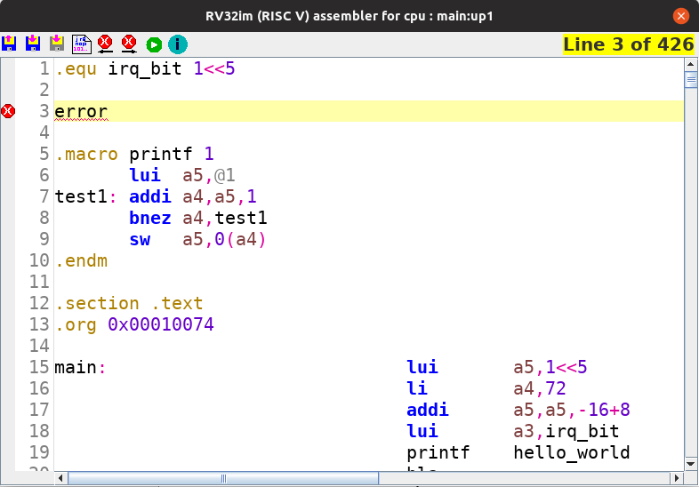

This icon activates the saving of the current contents in the editing
area. The save function can also be activated by the keyboard shortcut
(Ctrl-S).
This icon activates the saving of the current contents in the editing
area. The save function can also be activated by the keyboard shortcut
(Ctrl-S).The build in assembler of logisim-evolution supports besides the instructions provided by the used processor several features as described in this help page.The assembler uses syntax highlighting and error detection. Furthermore it translates the instructions into byte-code that can be executed by the processor. Although the structure of the assembler would allow to write out an elf-file this feature is not yet implemented.
When opening the assembler you are presented with a new window as shown below:

The GUI consists of three components:
The toolbar provides the main functions of the assembler by use of several icons:
This icon activates the loading of an assembly file into the editing area. The load function can also be activated by the keyboard shortcut (Ctrl-L).
This icon activates the saving of the current contents in the editing
area. The save function can also be activated by the keyboard shortcut
(Ctrl-S).
This icon activates the save-as function of the current contents in the editing area. The save-as function has no keyboard shortcut.
 This icon activates the
assemble function of the current contents in the editing area. The
assemble function cal also be activated by the keyboard shortcut (ALT-A).
This icon activates the
assemble function of the current contents in the editing area. The
assemble function cal also be activated by the keyboard shortcut (ALT-A).
This icon jumps to an error detected before the current cursor position. This function is also available by the keyboard shortcut (Ctrl-P).
This icon jumps to an error detected after the current cursor position. This function is also available by the keyboard shortcut (Ctrl-N).
This icon activated the assemble function and, when no errors are detected, loads the program into memory. The run function can also be activated by the keyboard shortcut (ALT-R).
This icon show this help screen.
To the right of the toolbar the current line of the cursor and the total number of lines in the editing area are displayed. In case this indicator lights up yellow there are changes detected in the editing area.
The line indicator bar hold, besides the current line number, also the error indicator icons. Hovering over the error indicator bar will show (one of) the error(s) detected on the given line in the editing area.
The editing area contains all the code you might want to use. In case your code contains errors (after activating the assemble or run function) the errors will be displayed by an error icon in the line indicator bar and a small red line underneath the text causing the problem. hovering over this text with the mouse will display the error cause. It is important to note that, when multiple errors are present in one line, only one will be displayed by the error marker in the line indicator bar. Furthermore, in case of calculations (like in line 17 in the above showed image) it might be that only the 8 is marked instead of the complete calculation.
The assembler supports two types of calculations:
In case an address is required relative to the current program counter these calculations can be performed by using the reserved register pc. Also the usage of labels and constants are allowed in these calculations.
Examples: pc+8 , pc-0x40, mylabel-pc, etc.
In absolute calculations a constant value is calculated. To perform absolute calculations labels and constants are allowed.
Following calculation types are supported:
Important: For the moment the calculations are performed left-to-right independent of the hierarchy of the operator!
This means:
5+10*2 is calculated as (5+10)*2 = 30
10*2+5 is calculated as (10*2)+5 = 25
It is on the todo list to improve this poor calculation support.
The build in assembler supports macros. The syntax for a macro is:
.macro <name> <nr_of_variables>
<BODY>
.endm
A macro definition needs two parameters:
Inside a macro you can use only instructions, labels, calculations, and calls to other macros. It is important to note that labels defined inside the <BODY> of a macro are local to the macro and cannot be referenced outside the macro.
If the parameter <nr_of_variables> is a number bigger than 0, the macro must be called with this number of values. Each of this values can be referenced inside a macro with the indicator @<x> where <x> is a number. Hence @1 references parameter 1, @2 parameter 2, etc.
Macros allow to call other macros, however there are two restrictions:
There are several directives supported as described below.
Labels can be used by the syntax <name>: The <name> must start with a letter and may contain letters (a..z;A..Z), numbers (0..9), and underscores (_). Note that labels specified inside a macro are local to the macro. All other labels are global (hence a global label can be referenced inside a macro).
Named constants can be defined by the syntax .equ <name> <value>. The <name> parameter must start with a letter and may contain letters (a..z;A..Z), numbers (0..9), and underscores (_). The <value> field can contain a number or a calculation.
You can divide your program into sections by using .section <name>. The <name> parameter must start with a letter and may contain letters (a..z;A..Z), numbers (0..9), and underscores (_). There are four predefined section names being .text, .data, .rodata, .bss. These do not require the .section keyword in front of them.
Remarks are supported by placing a # in front of them and extend until the end of the line. Multi line remarks can be realized by putting in front of each line the #.
Strings can be specified by .string "<str>", .ascii"<str>", or .asciz"<str>". The <str> can contain any contents and may be multiple lines. Following escape codes can be used:
Both .string and .asciz will automatically insert a zero character at the end of the string.
By default the assembler will start at memory address 0x00000000. To be able to change the current memory address the directive .org <address> can be used, where the <address> is a value within a 32-bit address space. Note: only inter-section overlap will be checked by the assembler. If inside a section an address is specified that is already being occupied, the values are overwritten.
There are several ways to fill the memory with constant values. Besides from the byte-based way, all the others use a little-endian storage method, meaning that the least significant byte is stored at the lowest memory address, and the most significant byte at the highest memory address. The supported directives are: